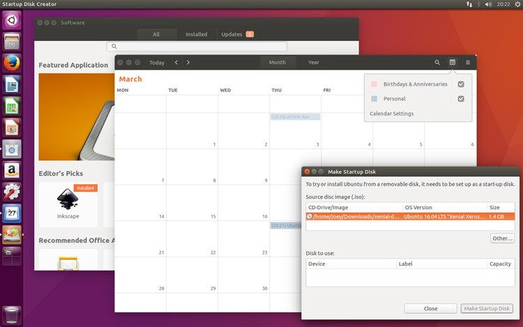
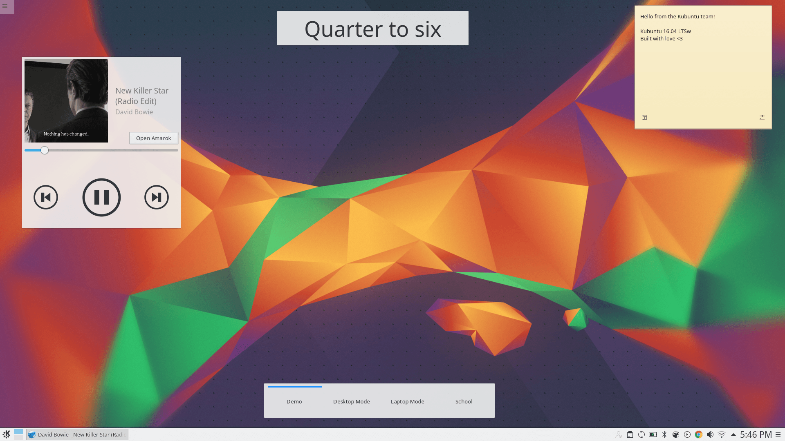

Quel système d'exploitation dois-je choisir ?
La base de toute suite logicielle personnelle ou d'entreprise est le système d'exploitation.
Les plus courants sont Windows, MacOS, ChromeOs et les distributions Linux.
Si toute votre infrastructure repose sur des produits Microsoft par exemple, il n'y a aucun doute que vous devez choisir Windows comme système d'exploitation pour votre entreprise.
Mais si vous êtes prêts à adopter le cloud, alors vous devriez considérer ChromeOS ou une distribution Linux parce qu'ils offrent une grande flexibilité à un coût de possession global bien moins élévé.

ChromeOS
Si vos utilisateurs ont besoin d'un ordinateur facile à utiliser, orienté collaboration et cloud, alors allez acheter un Chromebook.
Si vous utilisez Office365, GSuite ou Collabora Online comme suite bureautique principale, ce sera largement suffisant pour permettre à vos utilisateurs de faire leur travail quotidien.
Si vous avez besoin de plus d'outils, vous pouvez choisir parmi des milliers d'applications Android disponibles sur le Play Store. La console de gestion facilite le déploiement et le contrôle de votre flotte d'appareils.
En conclusion: si vous avez besoin d'un ordinateur portable parfait pour des utilisateurs sans bagage technique qui travaillent principalement dans leur navigateur web et qui soit construit pour ne pas nécessiter de maintenance, le Chromebook doit être votre choix numéro 1.
Si vous avez besoin d'outils plus puissants que vous pouvez utiliser en tout type de situation, alors considérez l'achat d'ordinateurs intégrant une distribution Linux.
Linux est généralement utilisé comme nom générique pour un certain nombre de distributions utilisant le noyau Linux (le coeur du système d'exploitation). Ici nous parlerons uniquement des distributions Linux, l'équivalent de Windows ou MacOS.
Il existe de nombreuses distributions, certaines soutenues par des entités commerciales (Fedora, openSUSE, Ubuntu) et d'autres développées uniquement par une communauté en ligne (Debian, Gentoo, Arch Linux).
L'infographie suivante permet de voir la chronologie des différentes distributions Linux.
{kind=link}
Ce qui donne de la valeur aux distributions Linux, sont le choix qu'elles offrent, la technologie sur laquelle elles reposent - toutes ne sont pas compatibles et offrent des outils différents - et les environnements de bureau.
Si on prend Ubuntu en exemple, une des distributions Linux les plus populaires, vous pouvez choisir à quoi va ressembler votre bureau: plus comme Windows ? Plus comme MacOS ? ou simplement différent ?
Voici quelques exemples des différentes options disponibles:

La distribution Ubuntu classique avec le bureau Unity

Kubuntu, une distribution Ubuntu avec le bureau KDE

Une distribution Ubuntu avec le bureau Gnome
Cela veut dire que vous ou vos utilisateurs pouvez choisir n'importe quel environnement de bureau ci-dessus avec le même système d'exploitation que le reste de l'entreprise.
Bien sûr, une bonne pratique est de ne choisir qu'un environnement pour tout le monde afin de faciliter la gestion du changement et les transferts de connaissance, mais c'est toujours intéressant de savoir qu'on dispose d'autres options.
Comment choisir la bonne distribution ?
Afin de choisir la bonne distribution, vous devez tout d'abord analyser votre infrastructure IT existante.
Si votre flotte d'ordinateurs est relativement vieille et vous n'avez pas le budget pour la changer, la dernière version d'une distribution Linux avec un environnement de bureau léger (XFCE/MATE/...) va vous permettre de la sécuriser complètement et de lui donner une deuxième vie.
Si vous êtes prêt à investir un petit peu dans une nouvelle flotte de matériel, vous pouvez séparer votre investissement en plusieurs catégories en fonction des besoins métiers de chacun de vos collaborateurs.
Pour certaines personnes, un Chromebook fait pour le cloud et peu onéreux, peut-être le choix parfait. Pour d'autres départements, une distribution Linux permettant un usage similaire à Windows ou Mac sera plus approprié.
Vous pouvez même choisir un environnement de bureau familier pour les utilisateurs qui ressemble énormément à MacOS (Pantheon) ou Windows (Cinnamon).
Une bonne revue de vos processus métiers devrait vous aider à faire la liste des types de logiciels dont vous avez besoin pour déterminer quelle distribution est la plus adaptée.
Est-ce adapté à un usage d'entreprise ?
La principale question que les gens posent lorsque l'on parle de Linux concerne sa sécurité.
Tout d'abord, regardons les choses à l'envers: est-ce qu'un PC connecté à Internet qui tourne sous Windows XP est sécurisé ? Surtout sachant que Microsoft ne fourni plus de mises à jour de sécurité ou de signatures anti-virus.
On peut poser la même question pour Windows 7, pour lequel le support standard s'est terminé en Janvier 2015.
Avec l'augmentation des malware, des ransomware en particulier , il est crucial de maintenir son infrastructure IT et sa flotte d'appareils complètement à jour.
Les distributions Linux disponibles n'ont peut-être pas toutes le même niveau de sécurité, mais les privilèges par défaut des utilisateurs, les permissions données aux programmes plus contrôlées, le système d'audit performant et le fait quelles soient open-source et qu'on puisse compter sur une communauté de milliers de développeurs pour corriger toutes les failles de sécurité les rendent aussi, voire plus sécurisées que Windows ou MacOS.
Leur adoption par un large pourcentage de serveurs dans le monde peut être considéré comme une preuve de confiance par les acteurs majeurs du secteur.
Pourrais-je utiliser n'importe quel logiciel ?
Faisons simple: si vous avez vraiment besoin d'utiliser Photoshop, Microsoft Office (version bureau) ou n'importe quel autre logiciel non-compatible, vous ne devriez pas songer à passer sous Linux.
Mais, à l'exception de quelques personnes qui ont besoin de logiciels très spécifiques, pour les autres vous pouvez considérer passer à un ordinateur sous Linux ou un Chromebook avec Chrome ou Firefox qui permet de travailler le plus possible dans le cloud.
Comme suite de productivité, vous pouvez utiliser soit Office365, GSuite ou Open365. Et si vous avez besoin d'une version locale pour faire des calculs plus puissants, vous pouvez installer LibreOffice.
Pour les autres logiciels, il y a une alternative open-source à quasiment tout ce qui existe si aucun version dans le cloud n'est disponible.
Dans tous les cas, un parc informatique favorisant le travail dans le cloud vous permettra de centraliser l'information, de gérer vos utilisateurs et de garder votre propriété intellectuelle sous contrôle. Une flotte d'appareils sous Linux vous permettra d'y parvenir simplement et à un coût global bien inférieur à n'importe quel autre système d'exploitation.
Il ne restera alors plus qu'à faire un arbitrage entre le coût d'une souscription à un service SaaS ou le passage à un logiciel gratuit et open-source, en incluant évidemment le coût caché de gestion du changement.
N'hésitez pas à me contacter si vous avez besoin d'une analyse et de conseils sur le sujet.